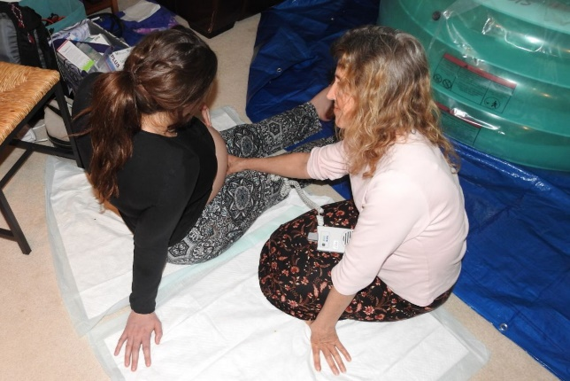

Birth
Karis, at dawn
Most people fear giving birth at home because they are afraid of something going wrong. Isn’t life much more worth living and relaxing without being so afraid?

Most people fear giving birth at home because they are afraid of something going wrong. You may hear horror stories of women dying, having complications, or simply saying “I can’t do it.” Isn’t life much more worth living and relaxing without being so afraid? I sure think so. God designed our brain so powerful that the way we think, and feel will influence the outcome. I have never imagined giving birth in a hospital. It never crossed my mind. I have always liked everything to be natural with no drugs or chemicals. I was inspired by women who gave birth naturally. Having a midwife was my first and only option to deliver my baby. One of my friends referred me to an amazing midwife who is one of the most humble and loving woman I have ever met.

As the day my baby was about to arrive I was already in labor without me knowing. I reached my 40-week mark in early May, and my midwife saw my stomach go up and down and said I was in labor at 10am. I remember my husband and I wanted to go on a hike even though I was waddling and walking slow as a snail (literally). Our midwife said no, so that she could keep an eye on me. We hung out all day including the 2 assistants, patiently waiting for the arrival of my daughter in the comfort of my own home. It was so peaceful and calming. My midwife and husband began to fill up the birthing pool as I laid in bed.
At 11pm I got into the birthing pool all excited, with no pain at 9 cm Dilated, began eating watermelon, laughing and having decent conversations with everyone. They were amazed at how calm and content I was. I began telling them the angel God sent me in my vision and how everything will be OK. They said I am the first woman to feel no pain during labor, even at 9cm dilated! I began texting friends, family and the pastor of how excited I was.
Just after 11:30pm that night, I felt a strong kick, looked down and said, “uh I think my water just broke”. Everyone hoovered over me, looked in the water and said “yep”! I remember concentrating with tears in my eyes as my contractions were getting more intense. My body was too relaxed in the pool, so I decided to get in my bath tub to lay down and feel hot water on my body. My baby was always a strong kicker and wanted her out right then. My body was not progressing in the water, so I decided to get up and squat to push. It’s quite effective.
I was squeezing my husband and one of the assistant’s hands very tightly as they were keeping my body up. My body was exhausted, my face was turning white and felt my legs shake. Swen was cheering me on and told me I can do it. During pushing, I asked one of the assistants of how many home births she had LOL. The pain did hurt yes, but the pain was not how the worldly movies portray it to be. Women from the bible gave birth to their babies for hundreds of years with no drugs. Giving birth is so beautiful and knew I had the strength to do it.
I ended up pushing the baby on my bed, saw and felt her head with a mirror, which was cool. What a night it was! Hearing her first cry was so precious, seeing her daddy hold her with so much love was so beautiful to see. When I held my baby for the first time I said, “hi baby” and held her tight. We are so in love with her. She was and still is a very alert and sweet baby. My daughter was born early in the morning, weighing exactly 9 pounds, 21 inches long, I had no tearing and no complications! I was in labor for a total of 17 hours (13 of them with no pain). It was the most smooth and perfect birth. God did the possible and never left my side!
“For with God nothing shall be impossible.” Luke 1:37
We all need to trust God and let him guide us with every step we take. Our little girl is such a blessing to us and cannot thank God enough. She is our miracle.
A word about safety. This is my account of one labour, and I was fortunate in every particular: a healthy pregnancy, a midwife I trusted completely, and a team who could get help quickly if we needed it. Home birth is not the right choice for every pregnancy, and nobody should read one good story as an argument for one. If you are pregnant and unsure, talk to a midwife and your doctor, and make the decision with the people who can see your charts.